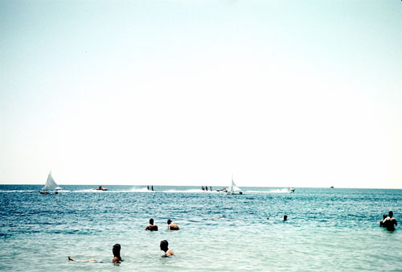
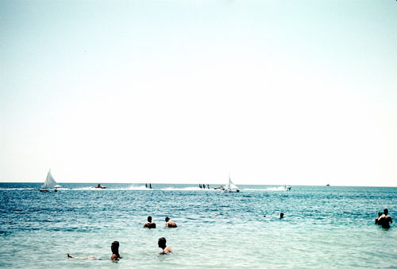
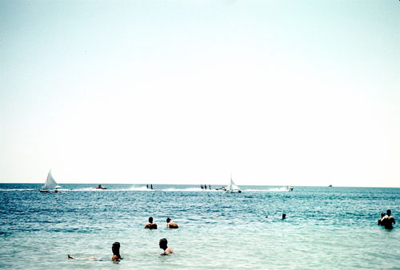

 about Half Moon Bay
Half Moon Bay has been a place of recreation for many people, including oil workers and their families, for the last 80 years. Known for its great grouper fishing and sailing, many generations have enjoyed it. With an average depth of around 22 feet (with a few spots dropping to 50 feet) Half Moon Bay has been an excellent classroom for thousands of divers learning the sport of scuba diving. It is a very forgiving bay, with shallow entrances and very few large sharks. However, around 1968 a 30-foot whale wandered in to the enjoyment of many of the locals.
history
 In the early 1900s Half Moon Bay was known locally as Doha Dhalum. It was a stop for many of the Arab traders from the Persian Gulf area sailing their traditional dhows. It was a stop to get out of bad weather and load up on fresh water from any number of artesian wells which dot the bottom of the bay. Traders would also pull into the cove on the middle of the western shore which is now a housing development and load up with salt from a local mine. This salt would either be sold in Africa or traded for skins, or taken to India depending on the prevailing winds. This cove used to be called Quincy's Cove after a local oil family that used to frequent the cove in the 1950s.